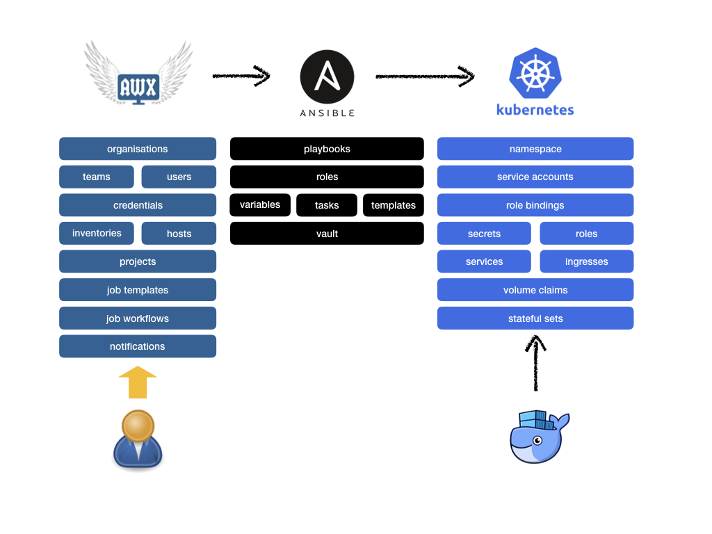

AWX¶
A brief overview of AWX and our use of it.
AWX Fundamentals¶
AWX is a task engine built on top of Ansible that is able to simplify, manage monitor application deployments through the use of Ansible playbooks present in repositories (GitLab, GitHub etc.). We’re not going to go into detail about how the AWX server we use is fully configured, instead we’re just going to explore some key aspects that are essential to deploying the Fragalysis Stack.
AWX provides Job definitions that allow the execution of Ansible Playbooks located in Git repositories. AWX executes these plays on Hosts defined in Inventories within AWX.
AWX is useful layer on top of raw Ansible because it provides: -
A centrally administered authoritative catalogue of Jobs (plays)
Controlled access to Jobs through the use of Organisations, Teams and Users. Jobs can be setup so they’re only available to permitted Users, Teams or Organisations, with varying levels of Access. Full access to a Job can be granted with Admin permissions or limited to Execution-only rights for named Users (or Teams or Organisations).
Job execution History
Job failure Notifications (e.g. via email)
AWX is a task engine we use to execute Ansible playbooks that manage Kubernetes objects.
Objects¶
To run a playbook in AWX you typically need to create the following minimum set of objects: -
An Organisation
A Team
A User
An Inventory and Hosts, often something simple like
localhostCredentials, like Kubernetes cluster credentials
A Project, which is a reference to a GitHib project containing the play
A Job Template, that joins the inventory, credentials and project together with the opportunity to over-ride default variables in the corresponding play
AWX in Operation¶
The AWX server is deployed with our Kubernetes Infrastructure, along with a Keycloak instance and PostgresSL database. It provides a web interface that allows Jbs to be executed (normally on local host) to deploy Fragalysis application components (like the Graph database and Fragalysis).
Deployment of applications often depends on: -
Access to playbooks resident in external Git repositories
Access to publicly available container images
Configuration data (typically graph and Fragalysis data) held externally (e.g. on AWS S3)